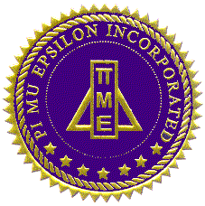

Final ceremony script — aligned with the slide deck, printed program, and AV cue sheet.
Use this as the emcee and section-speaker script for the first Virginia Omicron induction ceremony. The slide cues now match the revised slide deck.
Good evening, and welcome to the first induction ceremony of the Virginia Omicron Chapter of Pi Mu Epsilon at Liberty University.
This ceremony is being held on Tuesday, April 7, 2026, at 5:30 PM in DeMoss Hall Room 4272.
We are honored to gather with faculty, students, families, and friends to celebrate excellence in mathematics and to mark a historic moment in the life of our department.
As a Christian university, we begin with prayer.
(Opening Prayer — Prof. Andrew H. Volk, Chapter Advisor and Permanent Correspondent)
Transition: Please welcome Emma Kay for “About Pi Mu Epsilon.”
Slide cue: Press Next Slide to Slide 3.
Pi Mu Epsilon is the national mathematics honor society. Founded at Syracuse University and incorporated in 1914, it exists to promote mathematics and recognize scholarly achievement.
Through active chapters, student presentations, conferences, and its journal, Pi Mu Epsilon encourages students to grow in both mathematical understanding and scholarly participation.
Transition: Please welcome Avery Morrison for “Virginia Omicron at Liberty University.”
Slide cue: Press Next Slide to Slide 4.
Tonight marks a historic milestone for Liberty University: the first induction ceremony for Virginia Omicron.
This chapter represents a commitment to scholarship, community, and the advancement of mathematics on our campus. It also connects Liberty University to the larger national fellowship of Pi Mu Epsilon chapters.
Transition: Please welcome Dr. Thomas Wakefield for our featured discussion.
Slide cue: Press Next Slide to Slide 5.
At this time, we welcome Dr. Thomas Wakefield, Chair and Professor of Mathematics at Youngstown State University and Past President of Pi Mu Epsilon, for a brief discussion of Pi Mu Epsilon and what it takes to study mathematics at each increasing level of rigor.
He will reflect on mathematical maturity, disciplined inquiry, and the importance of scholarly communities that encourage students toward deeper study.
Transition: Thank you, Dr. Wakefield. Please welcome Heidi Jackson for the scholarship pledge.
Slide cue: Press Next Slide to Slide 6.
Will the candidates please stand and repeat after me:
“I solemnly promise that I will exert my best efforts to promote true scholarship, particularly in mathematics; and that I will support the objectives of the Pi Mu Epsilon Honor Society.”
Thank you. Please be seated.
Transition: Please welcome Isaiah Mellace and Annaliese DeFelice to read the names of initiates.
Slide cue: Press Next Slide to Slide 7.
We will now read the names of our initiates. As your name is called, please come forward to receive your certificate and recognition.
Faculty Members
Student Members
Transition: Thank you. Please welcome Dr. Daniel Scott Joseph for the membership book signing and discussion prompts.
Slide cue: Press Next Slide to Slide 9.
Each new member will now be asked to sign the membership book and respond to one brief mathematical prompt.
As each student signs, invite them to answer one of the following: favorite mathematical memory; a time they felt extreme joy or pain doing math; favorite mathematical topic; a math skill they wish they learned earlier; or the highest level of math they hope to accomplish.
This combines the formal signing with live discussion led by Dr. Joseph and Prof. Volk.
Transition: Thank you. Prof. Andrew H. Volk will now present the symbols and motto of Pi Mu Epsilon.
Slide cue: Press Next Slide to Slide 10.
The colors of Pi Mu Epsilon are violet, gold, and lavender.
Its seal, shield, and logo serve as visible reminders that tonight’s chapter is part of a larger national society devoted to mathematical scholarship.
Its motto is: To Promote Scholarship and Mathematics.
Transition: Prof. Andrew H. Volk will now give the charge to new members.
Slide cue: Press Next Slide to Slide 11.
As members of Pi Mu Epsilon, you are called to pursue mathematical excellence with humility, intellectual honesty, and service to others.
Your achievement tonight is both recognition and responsibility. Use your gifts well, encourage others, and help this chapter become known for scholarship, initiative, and generous community.
Transition: Please welcome Prof. Andrew H. Volk to lead the group photo and closing flow.
Slide cue: Press Next Slide to Slide 12.
The group photo will be taken on the DeMoss Steps. (In the event of inclement weather, the photo will be taken in the DeMoss Hall corridor immediately outside Room 4272.)
On behalf of the Virginia Omicron Chapter, congratulations and welcome.
Thank you to our faculty, administration, families, and friends for your support.
As a Christian university, we close this ceremony in prayer.
(Closing Prayer — Prof. Andrew H. Volk)
Transition: Ceremony complete. Invite everyone to the DeMoss Steps photo flow.
Slide cue: Hold on Slide 12 (no further advance).